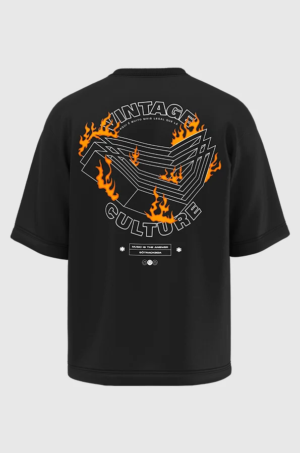
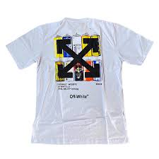
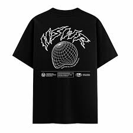
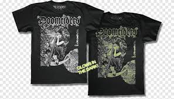
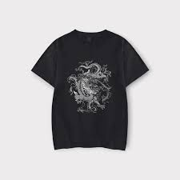
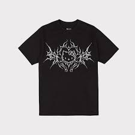
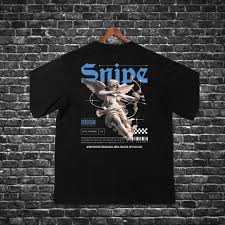

Nosso Trabalho
Veja como transformamos a presença digital de marcas autorais.

Minimal Tee Brand
Foco: Captação de Leads e Funil de Vendas.
Criamos uma Landing Page de alta performance focada em converter visitantes em contatos reais. Estrutura otimizada para tráfego pago e escala.
Resultado: +900 leads no 1º mês.

Voltage Apparel
Foco: Lançamento Relâmpago e Escassez.
Estratégia baseada em urgência com cronômetros e integração total ao WhatsApp. Design mobile-first para compras em um clique.
Resultado: Drop esgotado em 18 horas.

Urban Ghost Co.
Foco: Branding Minimalista e Exclusividade.
Criamos uma experiência de navegação 'limpa' com micro-interações que reforçam a identidade premium da marca. Estrutura focada em converter tráfego de influenciadores.
Resultado: +62% de taxa de retenção na página.

Street Vision Co.
Foco: Storytelling e Retenção.
Layout disruptivo focado no valor da marca. Retivemos o usuário por mais tempo na página através de uma experiência visual imersiva.
Resultado: +38% de tempo de permanência

MonoStyle Brand
Foco: SEO e Tráfego Orgânico.
Focamos em uma estrutura leve e minimalista para melhorar o ranqueamento orgânico. Otimizamos a velocidade de carregamento para reduzir a taxa de rejeição.
Resultado: Crescimento de 27% nas conversões orgânicas.

Drop Midnight Edition
Foco: Gatilhos Mentais e Escassez.
Implementamos contagem regressiva dinâmica para criar senso de urgência. A página foi desenhada para suportar altos picos de tráfego durante o drop.
Resultado: 100% do estoque vendido em 20 horas.

NextGen Apparel
Foco: Mobile-First e UX Design.
Landing page totalmente otimizada para a experiência em smartphones, com checkout simplificado e navegação por gestos.
Resultado: +44% de aumento nas vendas via mobile.

Night Shift Studio
Foco: Lançamento de Edição Limitada e Escassez.
Desenvolvemos uma experiência de compra 'dark mode' com cronômetros de contagem regressiva para criar urgência no público de luxo urbano. A interface foi otimizada para conversões rápidas durante o drop.
Resultado: Coleção esgotada em menos de 12 horas.
Nosso Processo
1 Estratégia
Análise da marca e definição da estrutura ideal.
2 Design & Copy
Criação visual alinhada à cultura street.
3 Conversão
Implementação de CTAs e integração com WhatsApp.